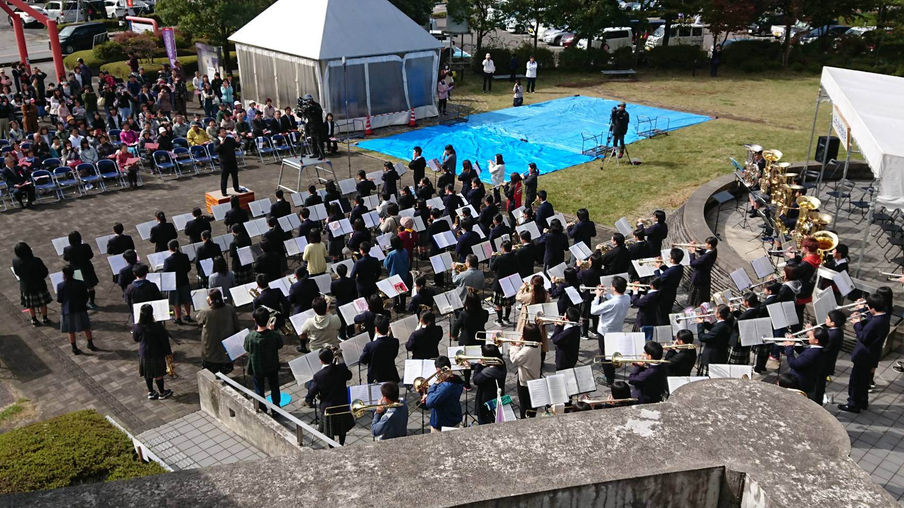

コンサート報告（2019年）
2025年 ｜ 2024年 ｜ 2023年 ｜ 2022年 ｜ 2021年 ｜ 2020年 ｜ 2019年 ｜ 2018年 ｜ 2017年 ｜ 2016年 ｜ 2015年 ｜ 2014年 ｜ 2013年 ｜ 2012年 ｜ 2011年 ｜ 2010年 ｜ 2009年 ｜ 2008年 ｜ 2007年 ｜ 2006年 ｜ 2005年 ｜ 2004年 ｜ 2003年 ｜ 2002年
アイスキャンドル点灯式出演 演奏終了（2019.2.2）
今年で25回目を迎えるアイスキャンドルの上諏訪地区点灯式に、当団トランペットパートが出演しました。毎年、市民が作った手作りのアイスキャンドルが諏訪の各地で置かれ、夜の街にろうそくの灯りがゆらめきます。
トランペットパートの出演は９年連続ですが、今年はメンバーも増え、ピッコロトランペットやアルトトランペットも使用。例年より賑やかに盛り上げることができたのではないかと思います。来年は、再開発で生まれ変わった上諏訪駅前で演奏できることを楽しみにしております。今後ともどうぞよろしくお願いいたします。
諏訪の国開国フェス出演 演奏終了（2019.3.2）
諏訪地区６市町村は「諏訪の国」という共同PR事業を実施しています。諏訪ブランドの素晴らしさを地元の人にも知ってもらいたい、そんな思いで開催されたイベントに出演させていただきました。最初に６市町村首長による開国宣言および「国旗」掲揚にてファンファーレを演奏。引き続いてアンサンブル３団体が演奏しました。当日は天候にも恵まれ、まさにフェスという雰囲気の中、楽しく演奏することができました。私たちも「諏訪の国」とともに歩んでいきたいと思います。
並木DEコンサート 演奏終了（2019.5.25）
今年度1回目の並木DEコンサートに、本年も出演させていただきました。天候にも恵まれて気温も高く、例年以上に多くのお客様にご来場いただき、誠にありがとうございました。最新のヒット曲から昭和の名曲まで、私たちの演奏を楽しんでいただけたなら大変うれしく思います。
蓼科高原ロビーコンサート 演奏終了（2019.6.22）
蓼科グランドホテル滝の湯さんでのロビーコンサートも今年で５年目、諸事情により例年の4月ではなく6月の開催となりました。例年以上に多くのお客様にご来場いただき、終演後はアンコールを求める大きな拍手をいただきました。私たちにとっても大変思い出深いコンサートとなりました。誠にありがとうございました。
柿蔭山房 七夕コンサート 演奏終了（2019.7.6）
歌人・島木赤彦の旧宅として知られる柿蔭山房（しいんさんぼう）の七夕イベント。今年は当団より各楽器ごとのアンサンブル６団体が出演しました。山間にある静かな環境での演奏はコンサートホールとはひと味違い、印象に残るものでした。ご来場の皆様、ありがとうございました。
聖母寮 慰問演奏 演奏終了（2019.7.27）
毎年7月に諏訪市の老人ホーム聖母寮を訪問して演奏活動をしています。当日は懐かしのメロディーを中心に5曲を演奏。リクエストのあった美空ひばりさんの曲は特に人気でした。最後はこれも恒例、県歌「信濃の国」を皆さんと一緒に歌い、締めくくりました。「来年もまた来てくださいね」の言葉、大変うれしく思います。ぜひ伺います。
諏訪湖音楽の夕べ出演 演奏終了（2019.8.6）
８月、毎晩花火が上がる諏訪湖。その前に音楽を楽しみましょう、という「諏訪湖音楽の夕べ」に５年ぶりに出演いたしました。心配されていた雨もなく、日没後の諏訪湖畔で楽しく演奏することができました。終演後は観客の皆さんと一緒に15分間の花火を楽しみ、思い出深い夜となりました。
老人ホームアイリス 敬老会出演 演奏終了（2019.9.15）
敬老の日に合わせて開催される同所の敬老会に、３年ぶりに出演しました。懐かしの曲から最近テレビでよく聞く曲まで５曲を演奏しましたが、100歳以上の方を含めて多くの入所者の方に熱心に聞いていただき、大変うれしく思います。ありがとうございました。
第25回 上社の杜音楽祭 演奏終了（2019.10.27）
 昨年、諸事情により開催が見送られた上社の杜音楽祭ですが、今年は装いを新たに開催が実現しました。秋らしい晴天の下、市内各中学校の演奏に加えて、ご来場の皆さんの合唱と出演全団体の合同演奏で「ふるさと」を演奏。短い時間ではありましたが大団円を迎えることができました。
今回、主催団体の一翼を担うことになり、多くの皆様にお世話になりました。誠にありがとうございました。
第25回 定期演奏会 演奏終了（2019.12.8）

早いもので諏訪市吹の活動も四半世紀となりました。その節目の演奏会を茅野市民館で開催させていただきました。師走にも関わらず、過去最高に近い596人のお客様にご来場いただき、ほぼ満席の会場で盛大に開催することができました。
今回は「世界へ渡った日本の曲」をテーマに選曲してみました。すでに古典としての地位を築いている吹奏楽オリジナル曲をはじめ、アニメ音楽や歌謡曲に至るまで、いろいろなジャンルに挑戦してみました。
これからも地元に密着して、楽しく演奏活動をしていきたいと思います。今後とも諏訪市民吹奏楽団を、どうぞよろしくお願いいたします。ありがとうございました。